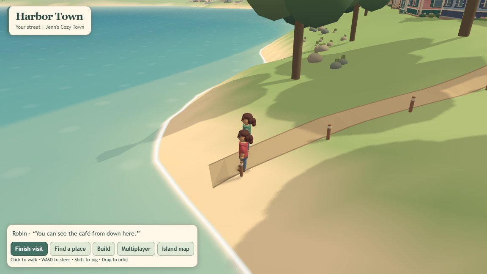
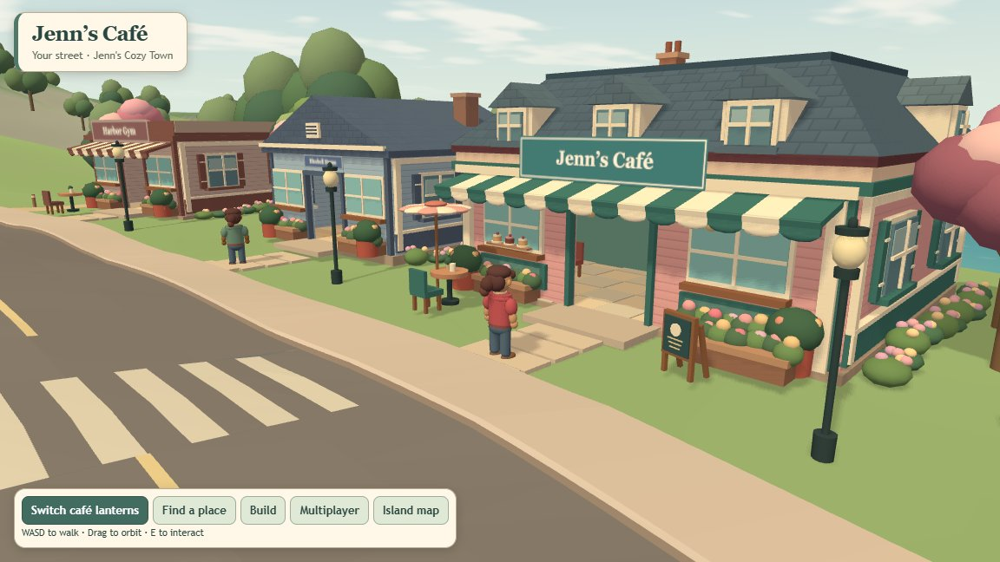
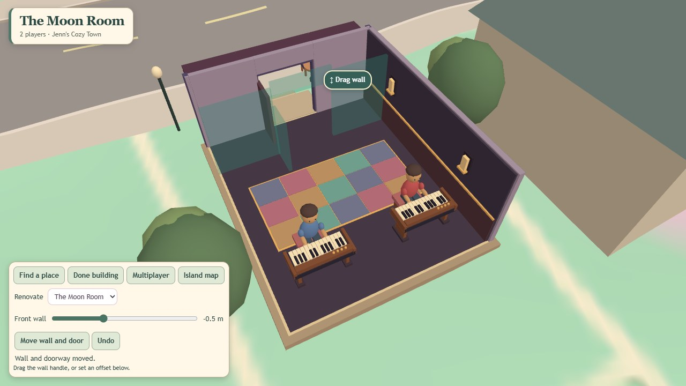
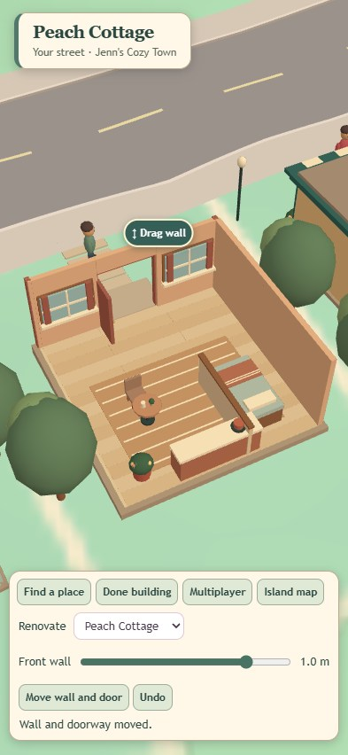
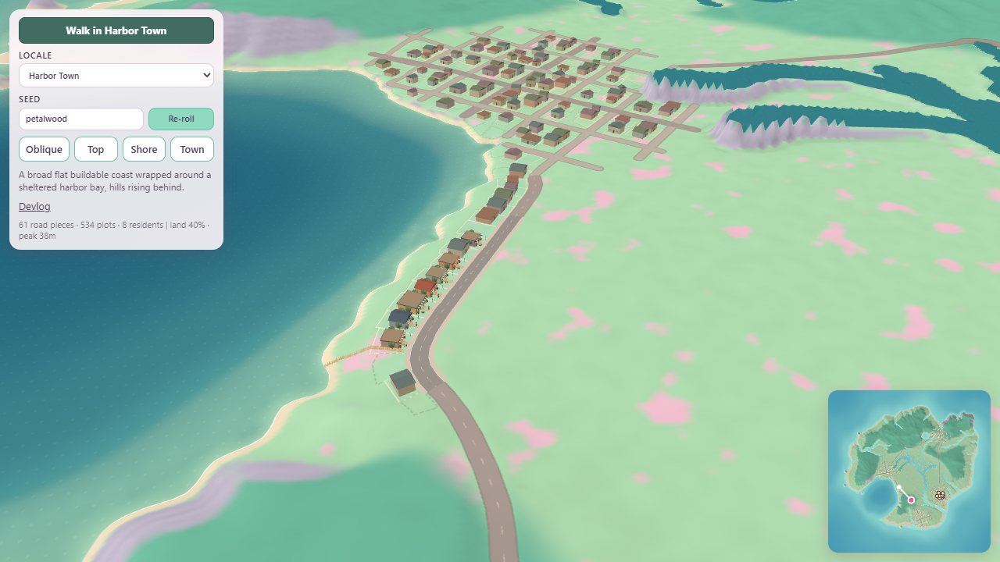
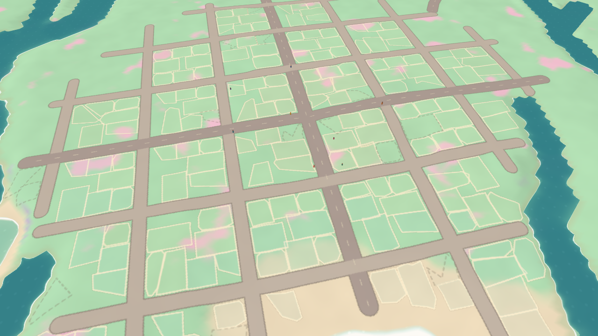
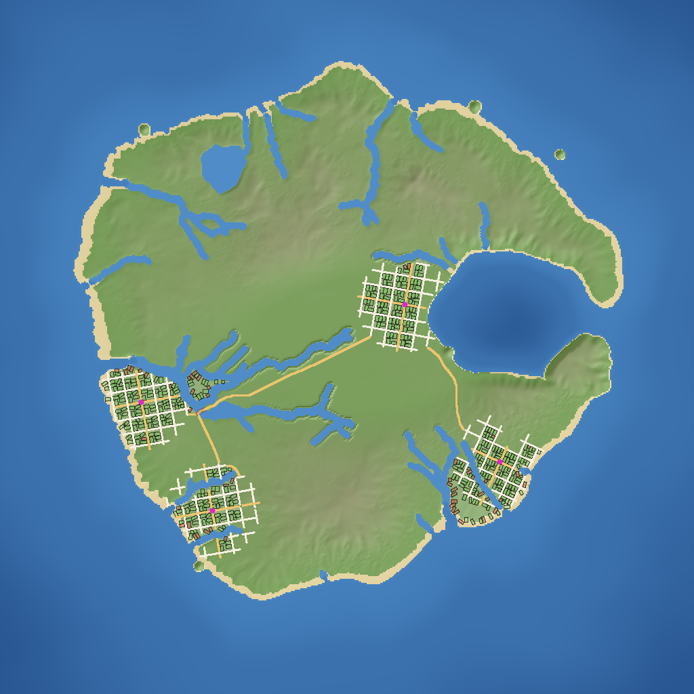
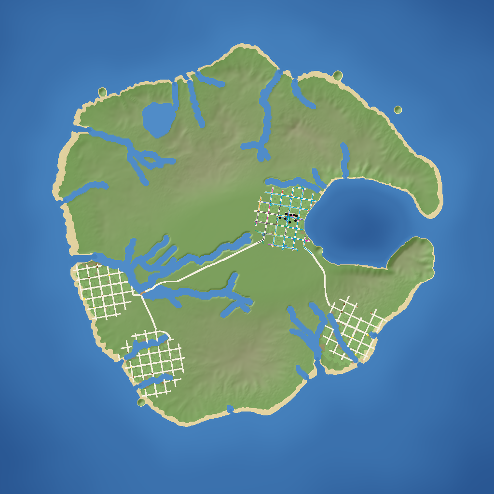
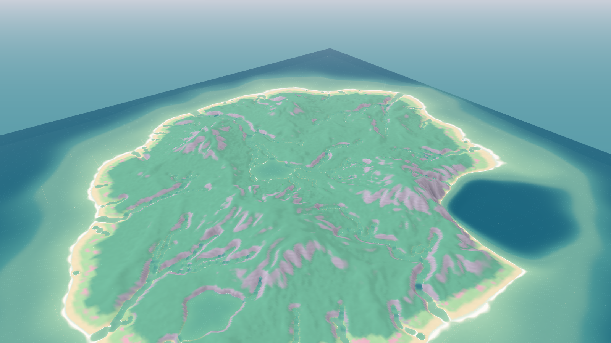
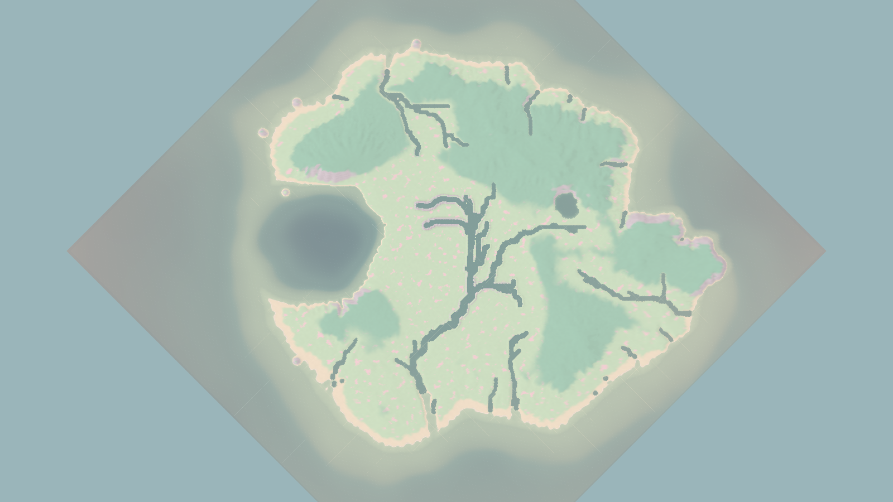

A record of the seeded islands, streets and residents that make up Cozy. The newest entry comes first.
2026-11-16 · M12 terrace furniture
A table for two outside Jenn’s Café
Open Build at the café and choose Furnish café terrace. Click a spot on the brick paving, turn the bistro set and place it. The two chairs face each other under a striped parasol. The doorway, planters and space between tables stay clear.
Carry two drinks out from the counter and choose a terrace table. Your neighbor walks over and sits opposite you. An owner can rearrange the rest of the terrace during the visit. The occupied table stays put until both people leave. Players can also click individual chairs to sit together.
Tables, rotations and the last sixteen furniture edits are saved with the owner’s town. A returning guest sees the same arrangement. Older café saves begin with the original parasol table, now with two usable chairs.
The owner has just placed the second table beside the café entrance.A guest and Robin share coffee at the newly placed table while the owner builds.
2026-11-16 · M11 movement and social play
Coffee with a neighbor
Order two coffees at Jenn's Café. Robin or Bea walks across to Harbor Green to save a seat while the drinks are brewing. Carry the cups over, share a bench-side conversation and choose whether to walk to the bay together. A neighbor remembers the next time you meet for coffee in this town.
Click a patch of ground to walk there, choose a venue under Find a place, or take over with WASD. Shift breaks into a jog. Guests respond to movement keys immediately and the host checks their path against the same walls. If the owner renovates during a visit, both walkers check their route again.
Click Robin or Bea to invite them by name. Indoors you can click a chair to sit, choose a keyboard part at the club, or order from the café counter. A player walking to a chair or keyboard holds that spot until they arrive or cancel.
Straight and diagonal movement cover the same distance at either pace. On guest screens, distant residents also keep walking between updates from the host.
On the same 2.4-second walk at 960 × 540 on an RTX 5070 Ti, the previous build held the character still on 75 of 143 measured frames. The new build moved on all 142 measured frames. Both walks covered about 10.4 metres.
At the café counter while the second cup is brewing.Robin and a visitor take their coffees to the pavilion.

Both walkers reach the water below the gym.
2026-11-16 · M10 island neighborhood
Across the street from Jenn’s Café
Walk from the café terrace to Harbor Green. A crossing lines up with the garden gate, a gravel loop circles the bandstand, and two players can sit on separate benches. A marked sand path beside the gym leads down to the bay.
Walk around the housing blocks to see porches, projecting wings, shingled roofs, rear windows and paths from front doors to the road. These surrounding houses have solid exteriors. The seven furnished waterfront buildings keep their interiors and activities.
The harbor shelf now grades the river surface with its bed. The published street and parcel plan is saved with the game so existing homes keep their addresses.

The café entrance and terrace from the starting camera.The garden gate on the walk from the café to the pavilion.Porches and front paths in the residential blocks inland.The waterfront, public garden and residential streets occupy the same coast.
2026-11-16 · M9 live building
A visitor at the club entrance
When someone stands beside a moving wall, the owner can see how far the edit will go. The handle and preview stop at the last clear half-metre. Walk away and the preview updates. Releasing the handle checks everyone's position again.
The same check now covers the ends of both side walls, including the narrow strip beyond the face of each front corner. The open door still has room for a visitor to pass through.
The owner asks for a metre of space at the Moon Room. The build panel shows how far the front wall can travel while a guest stands outside.
2026-11-16 · M8 waterfront nightclub
A duet at the Moon Room
Follow the waterfront from Jenn's Café to the Moon Room. The left keyboard plays melody and the right plays bass. Two players can sit at the walnut consoles under the crescent moon. Their hands and the two banks of stage lights follow their parts of the score.
The owner can move the club's front wall during a song. The entrance, marquee and porch travel together. The keyboards and dance floor stay in place. In the playtest both players walked in from the café and kept their parts through a one-metre extension and undo.
The bass player's view of both musicians after the entrance moved.

The owner's preview at the same club. Both players are still at the keyboards.
2026-11-16 · M7 home renovations
Moving the front door at Peach Cottage
The two homes on the waterfront can change size while visitors are inside. Drag the front wall toward the street to make room. Its windows, open door and porch move together. The back wall, furniture and anyone using it stay put.
Build opens over the selected property. The translucent wall is a private preview until the owner releases it. Each house keeps its own undo history. The café partition still works with existing saves.
The owner previews a one-metre extension at Peach Cottage while a guest sits next door in Bluebell House.The same session from the guest's chair in Bluebell House after the cottage extension.

Peach Cottage in the portrait build view. Drag the handle with one finger, then tap Undo to put the wall back.
Next
Add side-wall and corner edits.
Check joining from two independent networks.
2026-11-16 · M6 playable waterfront
Seven front doors on one island
Start outside Jenn's Café. Turn along the street to reach the two homes, Bay Kitchen, spa, gym and nightclub. Enter on foot and the roof cuts away. The waterfront buildings and their neighbours stand on the generated lots.
A guest can visit from a link while the owner previews a café wall move. The doorway travels with it. Players and the two waterfront residents limit how far it can slide. At the club two visitors can divide a piano tune into melody and bass.
The waterfront at player height. Each building has its own position on the island.

The waterfront road joins the rest of Harbor Town at the north end of the bay.
Next
Expand structural editing to exterior walls and adjoining parcels.
Playtest public relay joining on different networks.
2026-11-16 · M5 settlement viewer
A morning walk through Harbor Town
Choose Town to drop down beside a resident. The viewer opens their day at 10 a.m. so you can catch them walking, visiting a seat or stopping to chat. Gold dots follow awake residents on the minimap.
The petalwood seed lays out 61 road pieces and 534 plots in Harbor Town. The worker grades the road beds and levels the buildable plots before sending the terrain to the viewer. Road markings follow the hillside at every terrain detail level, and short decks carry crossings over inland water.
A resident leaves a home plot on the petalwood seed.

Harbor Town from above. Solid lines mark buildable plots and dashes mark the other plots.Five seconds on a Harbor Town street, with a two-second title card. (local file: docs/video/2026-11-16/cut-m5-harbor-residents.mp4)
What still looks bad
Residents are capsule placeholders. They share space at busy spots, and their seats and homes still have no visible models.
The lot outlines make short road stubs and awkward corner plots easy to spot.
Next
Playtest the streets at resident height before choosing building footprints and height limits.
2026-11-16 · M4 settlement and a living island
A package, a worker, roads, plots and a handful of residents
Terrain: the generator is now a standalone island-gen package (generate(), PNG16 and Unity RAW export, JSON presets, tests). Generation runs in a Web Worker with a chunk cache. Sea level is picked by height quantile so land ratio is a preset knob, coasts get majority smoothing, and each locale gets landmarks (hero hills, sea stacks, scatter peninsulas). The river beads turned out to be depth-tint variation in the water shader, so inland water now uses a saturated tint and rivers read as continuous channels.
Settlement: a new settlement package scores town sites on flat dry land, routes roads with slope-aware pathfinding (fords and bridges over narrow water, a style per locale), finds blocks and cuts plots along the street edge. Harbor Town now has 527 plots, 490 buildable. Roads and plots are data, ready for the flatten hook and the minimap.
Living island: an objects package (every object is a list of composable interaction layers, co-op edit ops, roles, occupancy, per-builder undo), a deterministic sim package (a handful of NPCs with home plots, a day routine, seats and lamps through the objects layers, replayable from seed plus an input log) and a net skeleton (invite links, Trystero guest-join, tested between two headless tabs).
Next: wire roads, plots and walking NPCs into the viewer, then building rules.

Harbor Town: four towns, a main road, 527 plots

Harbor Town: a day of NPC trailsPine Highlands: continuous rivers, no horizon stepsM3 cut: four locale orbits (local file: docs/video/2026-11-16/cut-m3-four-locales.mp4)
What still looks bad
Coast gullying and round silhouettes are only partly fixed.
Sandbar towns all sit on the main island; other islands stay unsettled.
No alleys; plots are still simple shapes.
NPCs cluster in one town and do not avoid each other.
None of the new packages are wired into the viewer yet.
Next
Wire roads, plots and walking NPCs into the viewer.
Building rules per lot, then massing.
2026-11-16 · M3 research-driven terrain
Terrain pass 3: stream-power erosion and real river networks
Research summary: the strongest fast approach in the literature is stream-power erosion on a drainage graph (Cordonnier et al. 2016, with a 2024 analytic follow-up), plus classic droplet hydraulic erosion and flow-accumulation rivers.
Implemented: every iteration floods the heightfield from the sea with a priority queue (this fills pits so water always reaches the sea and gives each cell a downstream neighbour), accumulates drainage area, and lowers each cell toward its receiver in an implicit, stable update, with a little hillslope diffusion. Rivers are now where drainage area is large, carved with a monotonically falling bed and a water ribbon that follows it.
Seeds now rotate bays and plateaus so islands differ. A pure-node seeds gallery renders 12 seeds per locale as contact sheets for judging variety.
Pine Highlands with stream-power valleys and river networks.

Meadow Cove with drainage-driven rivers.

Harbor Town top-down.Seeds gallery: 12 Harbor Town seeds.Seeds gallery: 12 Meadow Cove seeds (before bay rotation).
What still looks bad
Rivers read as pale or dark channels, not yet nice water ribbons with banks; some look like trenches on flat plains.
Gullied valleys can overdo it near coasts and on hills; needs tuning per locale.
Silhouettes are still mostly round; Sandbar Archipelago varies most, others need more shape variety (peninsulas, coves, sea stacks).
Pale stepped bands at the far horizon in the highlands view are still not fixed.
Sea level is still fixed, not set by height quantile; no moisture field yet.
Generation takes 1 to 2.5 s on the main thread; no worker or cache yet.
Not yet extracted into a standalone reusable terrain package.
Next
Extract the generator into a standalone package with generate() API, JSON presets, PNG/JSON export.
Web Worker generation and chunk mesh cache.
Landmarks per locale, quantile sea level, moisture field, coast smoothing.
2026-11-15 · M2 terrain quality pass
Terrain pass 2: landmarks, harbor shelf, rock strata, snow
Second pass on terrain quality. Meadow Cove and Harbor Town now get a handful of knolls so the land has landmarks. Harbor Town has a flat plateau shelf (a future building plain) beside the bay. River banks are smoothed, lake rims blend into the land instead of dropping into pits, and rock picks up strata banding. Snow starts lower on the Highland peaks.
Water foam is thinner and the water mesh is finer, so rivers and shorelines read better at distance. Vertex colour gets small noise variation so large areas stop looking flat.
Pine Highlands after pass 2: strata, snow peaks, lake blending.Meadow Cove with knolls and rocky shoulders.Harbor Town with its flat shelf beside the bay.Before (M1): Meadow Cove orbit, 1080p60 raw (local file: docs/video/2026-11-15/raw/BEFORE-m1-meadowCove-orbit-petalwood-1920x1080-60fps.mp4)After (M2): Meadow Cove orbit, 1080p60 raw (local file: docs/video/2026-11-15/raw/meadowCove-orbit-petalwood-1920x1080-60fps.mp4)
What still looks bad
Highland rivers are now barely visible from far away; they need to read as ribbons.
Distant horizon shows pale stepped bands past the world edge in the highlands view (fog plus chunk edge).
Meadow Cove is still mostly one green; zones need more variety and the pink flower specks look like confetti.
Strata banding can read as stripes on large mountain faces.
Lakes are flat dark discs with no shore detail.
Shore views are still low drama and the beach is very wide and flat.
Everything is still teal-green; palette needs more colour range.
Next
Rivers as clear ribbons, wider and with banks.
Fix the horizon bands, widen colour range, then move on to streets.
2026-11-15 · M1 terrain generator
First islands: four locales, erosion, rivers, baked light
First slice of the island world is running. A seed plus a locale preset produces the same island every time: radial falloff plus domain-warped noise, ridged mountains where the preset asks for them, then a droplet erosion pass and a thermal relax so slopes stop looking like raw noise.
Rivers follow the steepest way downhill and carve a bed; lakes get a flat water level below their rim. Beaches are flattened on purpose so there is room to build later, and steep rock gets cliff terraces. Colours come from a small list of zone rules per preset (height, slope, wetness, noise windows), not a biome simulation, so adding a meadow or snow patch later is one more row of data.
Light is baked into the vertex colours (sun shading, heightfield shadows, cavity darkening, soft banding) so the look stays flat and pastel. Water has a depth tint and animated shore foam. Terrain streams in 64 metre chunks with three levels of detail.
Four locales so far: Meadow Cove, Pine Highlands, Sandbar Archipelago and Harbor Town. 19 unit tests cover determinism and sea-level / land-ratio sanity.
Pine Highlands, oblique. Ridged mountains, erosion, rivers and a lake.Meadow Cove, oblique.Sandbar Archipelago, top-down.Harbor Town with its bay.Low shoreline view looking inland at the highlands.